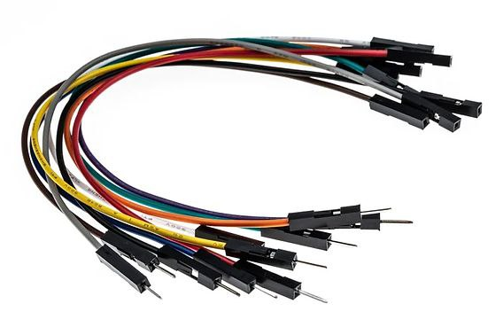

Jumper Wire 🔌
Jumper wires are essential components in electronics and DIY projects. They are used to make connections between different parts of a circuit, especially when working with breadboards, microcontrollers like Arduino, and other electronic components.
Key Features:
-
Flexible Wires 🧑‍🔧:
Jumper wires are made of flexible, insulated copper wires that can easily be bent and inserted into breadboard holes or headers, making them perfect for temporary or prototyping circuits. -
Male-to-Male, Male-to-Female, and Female-to-Female 🔄:
Male-to-Male wires have a pin (male) at both ends, which are inserted into female sockets or breadboard rows.
Male-to-Female wires have a male pin on one end and a female socket on the other, useful for connecting to components like sensors or modules.
Female-to-Female wires have female sockets at both ends, ideal for connecting male pins on components or Arduino boards. -
Variety of Lengths 📏:
Jumper wires come in different lengths, typically ranging from 10 cm (4 inches) to 30 cm (12 inches), allowing for flexibility in how you route connections in your project. -
Color Coding 🌈:
Jumper wires are usually color-coded (e.g., red, black, blue, yellow) to help visually differentiate connections, especially when setting up circuits with multiple connections. -
Insulated 🛡️:
Jumper wires are insulated, preventing accidental short circuits and ensuring safety during prototyping and testing.
How They Work ⚙️:
Jumper wires are used to establish temporary electrical connections between different parts of a circuit. For example, when working with an Arduino Uno, you can use jumper wires to connect the microcontroller to a breadboard, sensors, motors, LEDs, or other components.
By inserting the male or female ends of the jumper wire into a breadboard, the wire makes a conductive path between two points, allowing the circuit to function.
Common Uses 🔧:
-
Prototyping on Breadboards 🛠️:
Jumper wires are most commonly used on breadboards to quickly create and test circuits. They allow you to make connections between various components without soldering, making it easier to modify and adjust your circuit. -
Connecting Components to Microcontrollers 💻:
Arduino, Raspberry Pi, or any microcontroller can be easily connected to external components (like sensors, actuators, and displays) using jumper wires. This is a core tool for quickly building and testing projects. -
Temporary Connections ⚡:
Jumper wires are ideal for creating temporary connections during testing and prototyping. Once the circuit is verified, it can be permanently soldered together.
Types of Jumper Wires 🛠️:
-
Solid Core 🏗️:
These jumper wires have a single, solid wire inside and are typically stiffer. They're ideal for making connections on breadboards. -
Stranded Core 🌐:
These jumper wires consist of multiple fine wires twisted together, making them more flexible and durable, but slightly less stable for breadboard use.
Advantages ✅:
- Convenient for prototyping 💡
- Easy to use and quick setup ⏱️
- No soldering required ⚒️
- Variety of sizes and types for different connections 📏
- Color coding makes it easy to organize circuits 🎨
Conclusion 🏁:
Jumper wires are fundamental components for building circuits and prototypes, especially when working with breadboards and microcontrollers like Arduino. They make it easy to quickly connect components and test your ideas without needing to solder, making them an essential tool for electronics enthusiasts, hobbyists, and engineers alike.